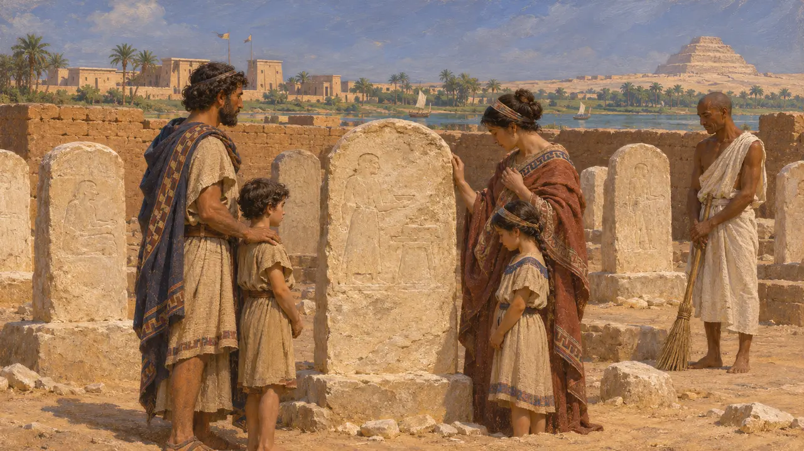
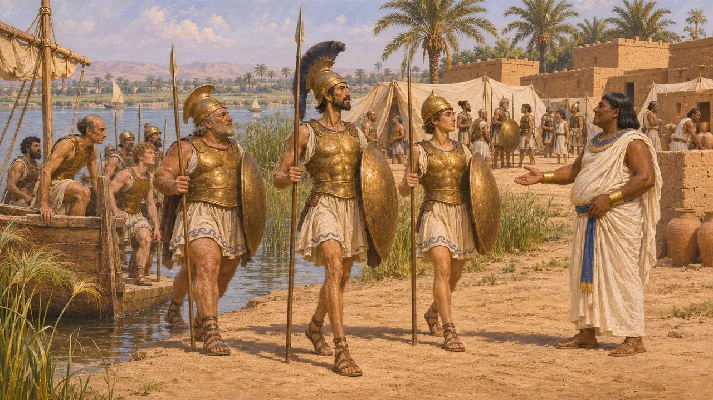
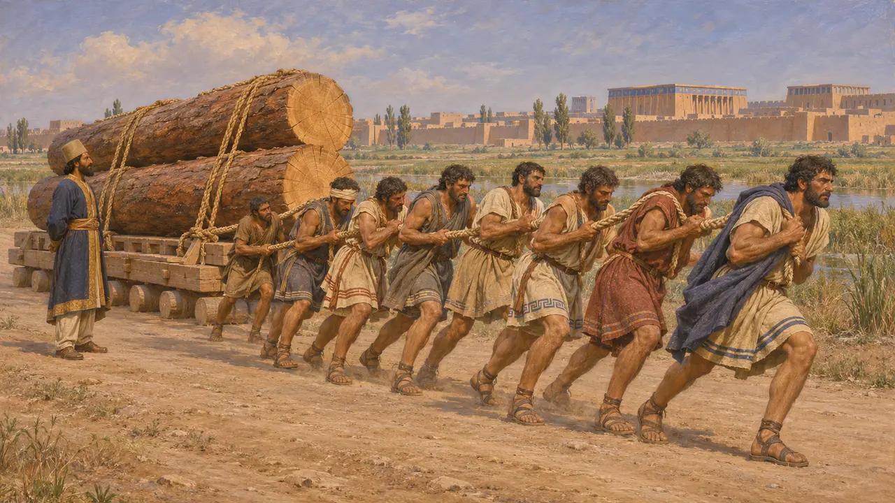
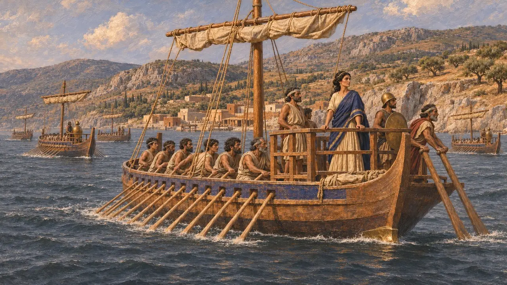
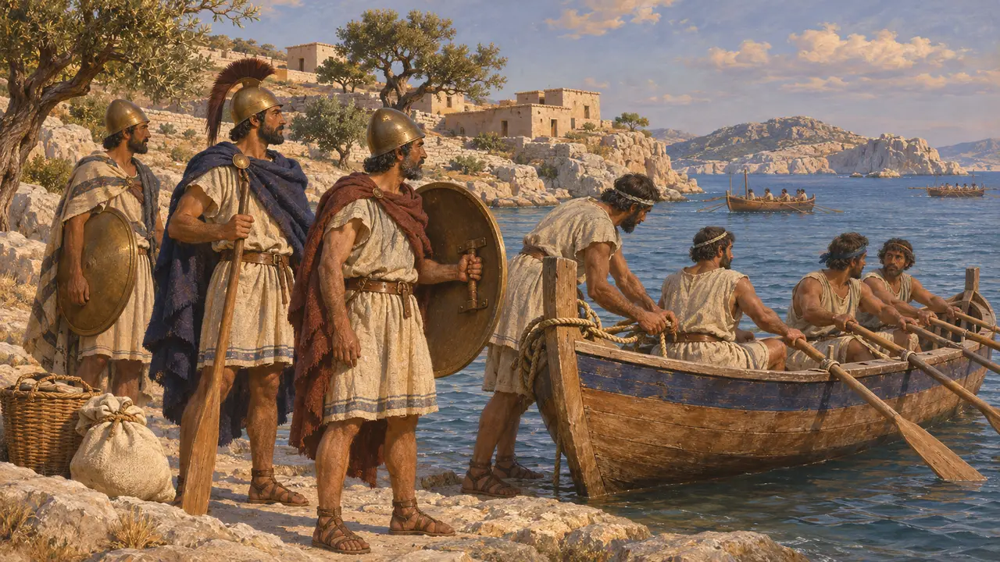

Los carios
Pueblo de Caria, en el suroeste de Anatolia, bajo dominio persa desde aproximadamente el 540 a. e. c.
Los carios vivían en las colinas y a lo largo de la costa del suroeste de Anatolia, al sur de Lidia, y hablaban su propia lengua anatolia. Eran conocidos en todo el Mediterráneo oriental como soldados a sueldo y navegantes. Bajo el dominio persa trabajaron en las construcciones del Rey, se alzaron en la revuelta jonia y más tarde enviaron naves a la flota de Jerjes.
En el juego: El juego incluye mercenarios carios y naves carias. Ambos concuerdan con las fuentes, que muestran a los carios contratados por los reyes de Egipto y, tras la conquista persa, sirviendo como marineros y soldados en la flota del Rey.

Tierra, lengua y escritura
En los documentosCaria se extendía entre el valle del Meandro y Licia, con Milasa en el interior y Halicarnaso en la costa, donde los carios convivían con colonos griegos. El cario pertenecía a la familia de lenguas anatolias y se escribía con un alfabeto propio. Muchos de los textos carios conservados proceden de Egipto, entre ellos estelas funerarias de Saqqara, cerca de Menfis. Las inscripciones bilingües permitieron a los estudiosos avanzar de verdad en la lectura de esta escritura a partir de la década de 1980.
I.-J. Adiego, The Carian Language, 2007

Soldados de los faraones
Relato antiguoHeródoto cuenta que Psamético I se hizo con el trono con la ayuda de hombres jonios y carios con armaduras de bronce llegados del mar, y que después los asentó en campamentos junto al Nilo. Más tarde, Amasis los trasladó a Menfis. En 525 a. e. c., mercenarios carios y griegos combatieron por Psamético III en Pelusio. Heródoto relata cómo, antes de la batalla, mataron a los hijos de Fanes, que se había pasado al bando de Cambises.
Herodotus 2.152; Herodotus 2.154; Herodotus 3.11

Trabajadores y colonos en el imperio
En los documentosLa carta de fundación de Darío en Susa registra que carios y jonios transportaron la madera de cedro desde Babilonia hasta Susa para su palacio. Documentos babilonios muestran una comunidad de carios que vivía en Borsippa en época persa, probablemente asentada allí por la corona. Estos registros presentan a los carios como súbditos trabajadores en el corazón del imperio, además de soldados en sus confines.
DSf; C. Waerzeggers, The Carians of Borsippa, 2006

Conquista, revuelta y flota
Relato antiguoHeródoto cuenta que Hárpago conquistó Caria para Ciro con escasa resistencia, salvo en Pédaso. Durante la revuelta jonia, los carios perdieron dos batallas, junto al río Marsias y en Labraunda, y luego tendieron una emboscada a un ejército persa cerca de Pédaso y mataron a sus generales. Tras la caída de Mileto en el 494 a. e. c. volvieron al dominio persa. En el 480 a. e. c., según Heródoto, los carios enviaron 70 naves a Jerjes, y Artemisia de Halicarnaso mandaba otras cinco.
Herodotus 1.174-175; Herodotus 5.117-121; Herodotus 6.25; Herodotus 7.93; Herodotus 7.99

Isleños del rey Minos
Leyenda posteriorLos escritores griegos contaban historias sobre el remoto pasado de los carios. Heródoto recoge un relato cretense según el cual los carios habían sido antaño isleños al servicio del rey Minos, y añade que los propios carios afirmaban haber vivido siempre en el continente. También les atribuye la invención de las cimeras de los cascos y las asas de los escudos. Tucídides dice que Minos expulsó de las islas a los piratas carios, y que muchas tumbas antiguas abiertas en Delos se consideraron carias por las armas enterradas en ellas.
Herodotus 1.171; Thucydides 1.4; Thucydides 1.8
Fuentes
- Herodotus, Histories, books 1, 2, 3, 5, 6 and 7
- DSf (Darius's foundation charter from Susa)
- Thucydides 1.4 and 1.8
- I.-J. Adiego, The Carian Language, 2007
- C. Waerzeggers, The Carians of Borsippa, Iraq 68, 2006
- P. Briant, From Cyrus to Alexander, 2002